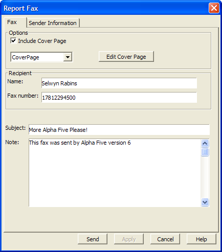
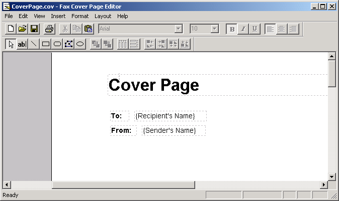
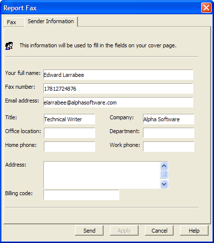

Faxing a Report
Alpha Anywhere supports direct faxing of reports using the built-in Windows Fax Service. Fax messages are queued, managed, and sent in the background by the Windows Fax Queue ( Start > Programs > Accessories > Communications > Fax > Fax Queue ).
You can send a fax manually or with an Xbasic script.
You can create fax cover page templates that include fonts and graphics.
You can set the values of up to 15 fields that will appear on the fax.
To fax a report:
Display the Report tab of the Control Panel.
Right click on the report of interest.
Select Fax... from the right-click menu. The Report Fax dialog appears.
Enter the recipient's Name and Fax Number and other desirable information.

If want to send a cover page, check the Include Cover Page check box and select a cover page from the list box, which contains several
If you want to change a cover page design, click Edit Cover Page to display the Windows Fax Cover Page Editor.
This product allows you to modify, create, delete, and save cover pages. The cover pages can include various fields provided by Alpha Anywhere, including:
- Recipient's Name
- Recipient's Fax Number
- Sender's Name
- Sender's Fax Number
- Sender's Company
- Sender's Address
- Sender's Title
- Sender's Department
- Sender's Office Location
- Sender's Home Telephone Number
- Sender's Office Telephone Number
- Message Note
- Message Subject
- Message Date/Time Sent
- Message Number of Pages
The cover pages are saved in the CoverPages folder under the Alpha Anywhere program folder. Picture
{kind=link}

Close the Windows Fax Cover Page Editor to return to Alpha Anywhere.
Display the Sender Information tab and fill in desired information.

Click Send to fax your report.
See Also